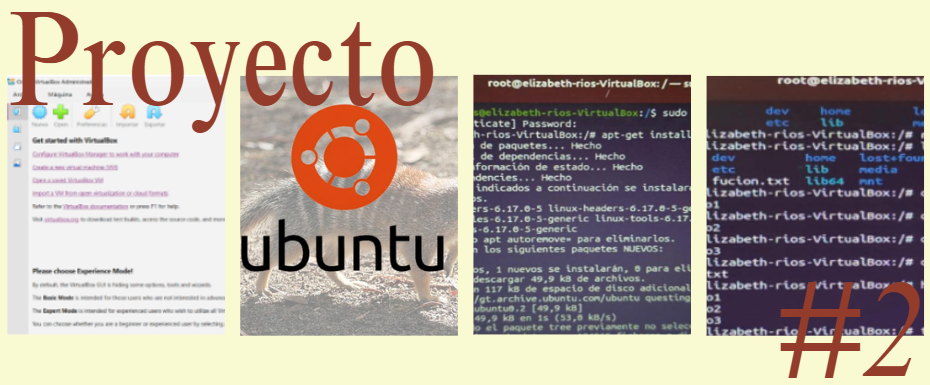
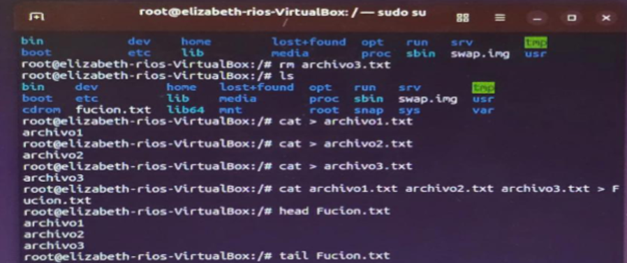

Proyecto Parcial 2 – Instalación de Ubuntu
Este proyecto consiste en descargar Ubuntu y VirtualBox para posteriormente configurar Ubuntu dentro de VirtualBox y así crear una máquina virtual. Además, se deben ejecutar algunos comandos básicos en la terminal de Linux, como la instalación de paquetes y la manipulación de archivos.
El objetivo principal es familiarizarse con el uso de máquinas virtuales y con los comandos esenciales del sistema operativo Linux.
el objetivo es instalar una versión reciente del sistema operativo Ubuntu en una máquina virtual utilizando VirtualBox, aplicando correctamente el proceso de configuración e instalación, así como el uso de comandos básicos en la terminal de Linux para fortalecer los conocimientos sobre sistemas operativos y administración básica de archivos.
El proyecto se realizó de forma individual descargando la versión ISO de Ubuntu 22.04.3 LTS desde el sitio oficial de Ubuntu e instalando el programa VirtualBox para crear una máquina virtual. Posteriormente se configuró la máquina virtual asignando memoria RAM, almacenamiento y otros recursos necesarios para ejecutar el sistema operativo Linux correctamente.
Luego se inició el proceso de instalación de Ubuntu utilizando el archivo ISO descargado, siguiendo cada uno de los pasos de configuración del sistema hasta completar la instalación.
Después de instalar Ubuntu, se trabajó en la terminal de Linux ejecutando diferentes comandos solicitados.

